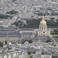

Museums and Galleries
At last count, there were over 83 museums in Paris. (And that's not including the Cinematheque Francaise which for some reason isn't included in any of the official tourist information listing of National, Private, and City museums.) There are probably a few small private museums that fall below the radar, but not to worry. Those are the museums that will find you rather than vice-versa. No matter what's on your must-see list, there are bound to be tough decisions to make when your time is limited.

The Louvre
The Musée du Louvre – in English, the Louvre Museum or simply the Louvre – is one of the world's largest museums, the most visited art museum in the world and a historic monument. A central landmark of Paris, it is located on the Right Bank of the Seine in the 1st arrondissement (district). Nearly 35,000 objects from prehistory to the 19th century are exhibited over an area of 60,600 square metres (652,300 square feet).
Musée d'Orsay
The Musée d'Orsay is a museum in Paris, France, on the left bank of the Seine. It is housed in the former Gare d'Orsay, an impressive Beaux-Arts railway station built between 1898 and 1900. The museum holds mainly French art dating from 1848 to 1915, including paintings, sculptures, furniture, and photography.

Les Invalides (French pronunciation: [lezɛ̃valid]), officially known as L'Hôtel national des Invalides (The National Residence of the Invalids), is a complex of buildings in the 7th arrondissement of Paris, France, containing museums and monuments, all relating to the military history of France, as well as a hospital and a retirement home for war veterans, the building's original purpose.
Les Invalides
Les Invalides (French pronunciation: [lezɛ̃valid]), officially known as L'Hôtel national des Invalides (The National Residence of the Invalids), is a complex of buildings in the 7th arrondissement of Paris, France, containing museums and monuments, all relating to the military history of France, as well as a hospital and a retirement home for war veterans, the building's original purpose.
Picasso Museum
The Musée Picasso is an art gallery located in the Hôtel Salé in rue de Thorigny, in the Marais district of Paris. The hôtel particulier that houses the collection was built between 1656 and 1659 for Pierre Aubert, seigneur de Fontenay, a tax farmer who became rich collecting the gabelle or salt tax (the name of the building means "salted").

Centre Georges Pompidou
Centre Georges Pompidou (also known as the Pompidou Centre in English) is a complex in the Beaubourg area of the 4th arrondissement of Paris, near Les Halles, rue Montorgueil and the Marais. It was designed in the style of high-tech architecture.
Rodin Museum
The Rodin Museum is a museum located in Philadelphia, Pennsylvania which contains the largest collection of sculptor Auguste Rodin's works outside Paris.
L'Hotel de Cluny
The Musée de Cluny, officially known as Musée National du Moyen Âge (National Museum of the Middle Ages), is a museum in Paris, France. It is located in the 5th arrondissement at 6 Place Paul Painlevé, south of the Boulevard Saint-Germain, between the Boulevard Saint-Michel and the Rue Saint-Jacques.
Palais de Chaillot
The Trocadéro, site of the Palais de Chaillot, is an area of Paris, France, in the 16th arrondissement, across the Seine from the Eiffel Tower. The hill of the Trocadéro is the hill of Chaillot, a former village.
L'Espace Dali
The Espace Dali is a unique permanent exhibition in France entirely devoted to the master of surrealism, Salvador Dali and more particularly to his sculptures and engravings. The museum, near the famous Place du Tertre in Montmartre, has more than 300 original artworks which feature the phantasmagorical world of one of the major 20th century artists.
La Villette" />
La Villette, an area in Paris, known for its Cité des Sciences et de l'Industrie, the biggest science museum in Europe.
La Villette
La Villette, an area in Paris, known for its Cité des Sciences et de l'Industrie, the biggest science museum in Europe.